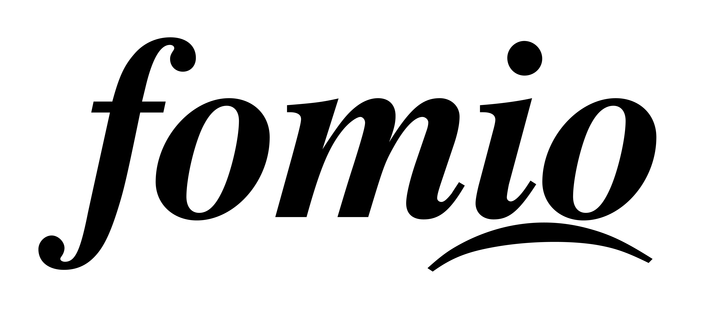

Visual system: Fomio colors on Liquid Glass
This page covers palette and source, where glass is used, how the accessibility settings change it, and what was actually checked. Updated 2026-10-03: system font for all app text, legibility adjustments to the glass shell, ~200% text and narrow-width checks.
1 · Source precedence
- Fomio web color tokens, as supplied in the brief from
docs/composer-v4-stage-0-r1/composer-v4-reference/2026-09-30-r1/tokens/color-schemes.css. Snapshot of 2026-09-30, not a statement about the deployed site. Used verbatim for every brand, text, surface and status role. - Neutral ramps derived from those tokens (secondary and tertiary text, grouped background, fills, separators, glass tints). Marked “derived” below; they are proposals.
- Fomio Design System project for the logo only: the existing wordmark PNGs. Its cream / terracotta colors and Raleway are not used. Lora, used for reading text in the previous pass, was removed in the 2026-10-03 correction pass.
- Apple platform conventions for structure, chrome and type: the system font (SF Pro on device,
-apple-system/system-uiin the browser) with semantic text styles for all app text, SF Symbols-style outline icons, iOS 26 control shapes.
2 · Palette
Hierarchy: text and surfaces carry the page; violet is reserved for community labels, selected tab, links and the one prominent action per screen (Reply, Post, New discussion, Sign in). Love is the liked-heart only. Danger is destructive actions and errors. Success has no MVP surface yet. Highlight marks a linked or search-matched post label; Selected tints avatars and the highlighted post.

3 · Liquid Glass placement
- {{ g }}
- {{ g }}
- Toolbar items are grouped by function: Search and New discussion share one capsule; Back and ••• stand alone.
- Menus and action sheets grow from the control that opened them, per the iOS 26 action-sheet guidance.
- A scroll edge effect sits under the top controls and above the tab bar, so content fades instead of hitting a hard bar edge.
- Glass never stacks on glass, except the Reply capsule sitting above the tab bar with a gap.
- Legibility over scrolling content: regular tab bar tint raised to 80% (light) / 66% (dark); the unread badge has a 2 pt background-colored ring so it reads over photos; selected tab uses a lens, filled icon and accent label, not color alone.
- Bottom padding is 104 pt on lists and 166 pt on discussions, so the last row and its actions scroll clear of the tab bar and Reply.
- Tab bar minimise-on-scroll is available natively (.tabBarMinimizeBehavior) and is not simulated here.
4 · Settings and accessibility treatment
5 · What was checked
- {{ d }}
- {{ d }}
Sources, checked 2026-10-03: Adopting Liquid Glass read in full through its Markdown version (applied: glass only on the navigation layer, avoid overuse and stacking, group toolbar items by function, scroll edge effect for legibility, test Reduce Transparency and other settings, full-height sheets more opaque, action sheets from their source, sidebarAdaptable tabs). Materials returned only a JavaScript shell. Layout, Tab bars and Accessibility could not be fetched this pass. Guidance attributed to those four pages comes from prior knowledge and needs rechecking against the live pages.